Part 2
Thread Repair (Part 2)
Cylinder Head Bolt Hole Thread Repair
Tools Required
J 42385-2030 M11 x 2.0 Cylinder Head Bolt - Northstar/Premium V8 Thread Insert Kit
Cylinder Head Bolt Hole Thread Repair:
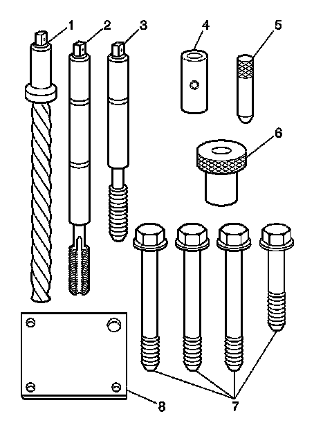
The cylinder head bolt hole thread repair kit J 42385-2030 components consist of the following:
* Drill (1) J 42385-2031
* Tap (2) J 42385-2032
* Installation driver (3) J 42385-2033
* Stop collar (4) for inboard holes J 42385-2034
* Alignment pin (5) J 42385-303
* Bushing (6) J 42385-302
* Bolts (7) J 42385-2035 and J 42385-2036
* Fixture plate (8) J 42385-301
Notice: Ensure the cylinder head bolts, tools and inserts that are being used are the proper pitch or engine damage will occur. The thread pitch on the M11 cylinder head bolts and the engine block cylinder head bolt holes have been revised. In order to install the proper pitch insert it is important to identify which thread pitch is being used. Cylinder head bolts with a pitch of 1.5 mm have a thread length of about 48 mm (1.890 in) long. Cylinder head bolts with a pitch of 2.0 mm have a thread length of about 67 mm (2.638 in) long.
Important:
* Cylinder head bolt holes with a pitch of 2.0 mm (0.08 in) use the tooling from the J 42385-2030 . Cylinder head bolt holes with a pitch of 1.5 mm (5.90 in) use the tooling from the J 42385-2000 .
* Verify the depth of the cylinder head bolt hole and the pitch of the cylinder head bolt threads. Measure the depth from the deck surface of the block to the bottom of the cylinder head hole. All cylinder head holes should use only one of the bushings. Never use both bushings to repair a block.
With M11 bolts with a 1.5 mm pitch:
* Use the bushing J 42385-2022 for inboard holes that measure 73 mm (2.874 in) deep and outboard holes that measure 89.5 mm (3.524 in) deep.
* Use the bushing J 42385-302 for inboard holes that measure 80 mm (3.150 in) deep and outboard holes that measure 96.5 mm (3.799 in) deep.
With M11 bolts with 2.0 mm pitch:
Use the bushing J 42385-302 for inboard holes that measure 73 mm (2.874 in) deep and outboard holes that measure 89.5 mm (3.524 in) deep.
Inboard Bolt Holes
Caution: Refer to Safety Glasses Caution (Safety Glasses Warning) .
Important:
* Remove the fixture plate prior to installing the insert with the installer tool.
* The use of a cutting type fluid GM P/N 1052864, (Canadian P/N 992881), WD 40(R) or equivalent is recommended when performing the drilling, counterboring and tapping procedures.
When installed to the proper depth, the flange of the insert will be seated against the counterbore of the drilled/tapped hole.
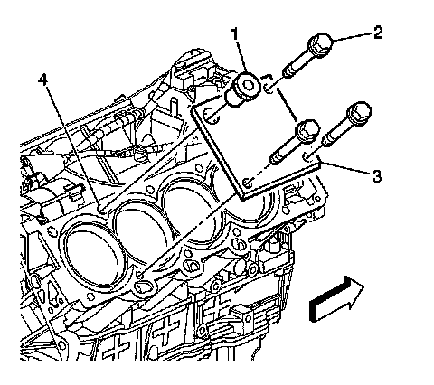
1. Position the fixture plate (3) with the bushing (1) installed over the cylinder head bolt hole to be repaired (4).
2. Loosely install the fixture plate bolts (2) into the remaining cylinder head bolt holes.
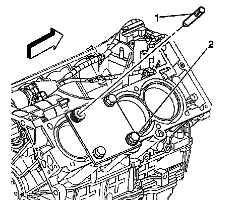
3. Position the alignment pin (1) through the bushing and into the cylinder head bolt hole.
4. With the alignment pin in the desired cylinder head bolt hole, tighten the fixture retaining bolts (2).
5. Remove the alignment pin (1) from the cylinder head bolt hole.

6. Install the stop collar (2) onto the drill (1).
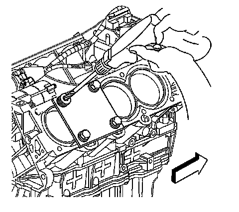
Important:
* During the drilling process, it is necessary to repeatedly remove the drill and clean chips from the hole and the flutes of the drill.
* Drill the hole until the stop collar contacts the top of the drill bushing.
7. Drill out the threads of the damaged hole.

Important: All chips must be removed from the drilled hole prior to tapping.
8. Using compressed air, clean out any chips.
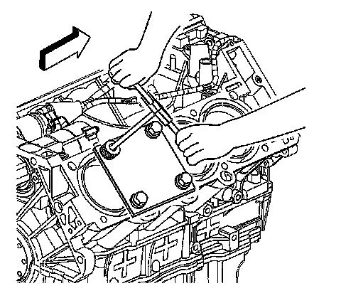
Important:
* During the tapping process, it is necessary to repeatedly remove the tap and clean chips from the hole and the flutes of the tap.
* Ensure the tap has created full threads at least to the depth equal to the insert length.
9. Using a suitable tapping wrench, tap the threads of the drilled hole by hand only.
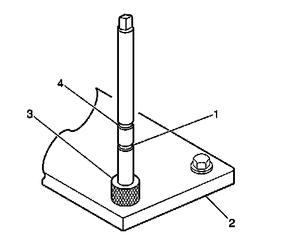
10. In order to tap the new threads for the insert to the proper depth, rotate the tap into the cylinder head bolt hole until the first mark (1) on the tap aligns with the top of the drill bushing (3).
Important: Remove the fixture plate prior to installing the insert with the installer tool.
11. Remove the fixture plate bolts (2).
12. Remove the fixture plate (3) and bushing (1).
Important: All chips must be removed from the tapped hole prior to insert installation.
13. Using compressed air, clean out any chips.

14. Spray cleaner GM P/N 12346139, GM P/N 12377981 (Canadian P/N 10953463) or equivalent into the tapped hole.
Important: All chips must be removed from the tapped hole prior to insert installation.
15. Using compressed air, clean out any chips.

Important: Do not allow oil or other foreign material to contact the OD of the insert.
16. Lubricate the threads of the driver installation tool (2) with the driver oil J 42385-110 (1).

17. Install the insert (2) onto the driver installation tool (1).

18. Apply threadlock sealant GM P/N 12345493, (Canadian P/N 10953488), J 42385-109, LOCTITE 277(R), or equivalent (1) to the insert OD threads (2).
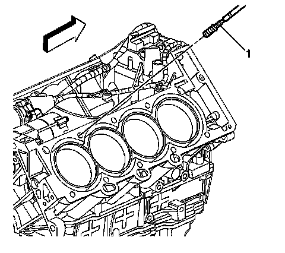
19. Install the insert and installation driver (1) into the tapped hole by hand only.
20. Start the insert into the threaded hole.
Important: If the insert will not thread down until the flange contacts the counterbored surface remove the insert immediately with a screw extracting tool and inspect the tapped hole for any remaining chips and/or improper tapping.
21. Install the insert until the flange of the insert contacts the counterbored surface.
Important: The driver installation tool will tighten up before screwing completely through the insert. This is acceptable. The threads at the bottom of the insert are being formed and the insert is mechanically locking the insert into the base material threads.
22. Continue to rotate the driver installation tool through the insert.
23. Inspect the insert for proper installation into the tapped hole.
Outboard Bolt Holes
Caution: Refer to Safety Glasses Caution (Safety Glasses Warning) .
Important:
* Remove the fixture plate prior to installing the insert with the installer tool.
* The use of a cutting type fluid GM P/N 1052864, (Canadian P/N 992881), WD 40(R) or equivalent is recommended when performing the drilling, counterboring and tapping procedures.
When installed to the proper depth, the flange of the insert will be seated against the counterbore of the drilled/tapped hole.
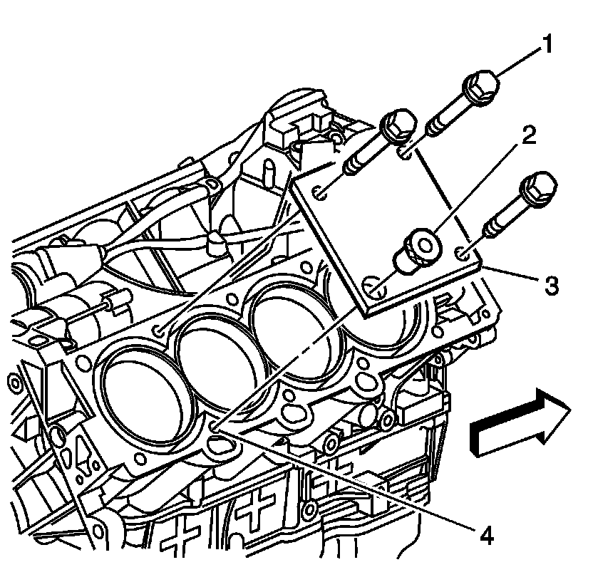
1. Position the fixture plate (3) with the bushing (2) installed over the cylinder head bolt hole to be repaired (4).
2. Loosely install the fixture plate bolts (1) into the remaining cylinder head bolt holes.
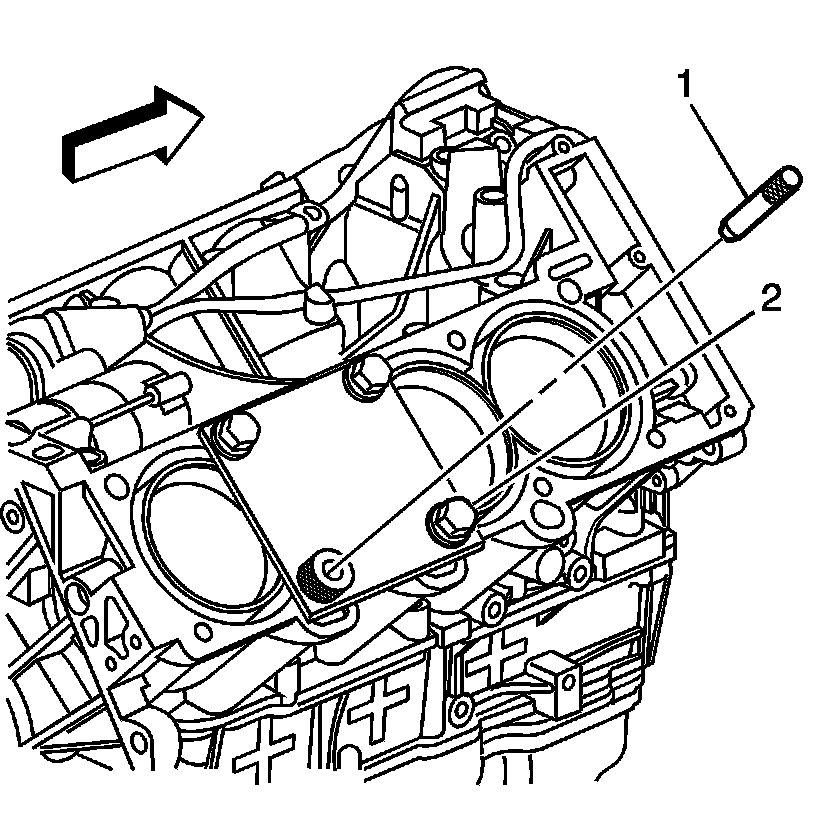
3. Position the alignment pin (1) through the bushing and into the cylinder head bolt hole.
4. With the alignment pin in the desired cylinder head bolt hole, tighten the fixture retaining bolts (2).
5. Remove the alignment pin (1) from the cylinder head bolt hole.
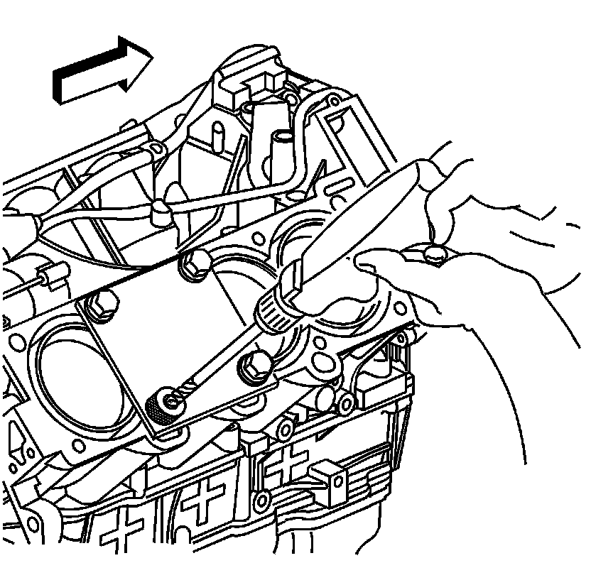
Important:
* During the drilling process, it is necessary to repeatedly remove the drill and clean chips from the hole and the flutes of the drill.
* Drill the hole until the stop collar contacts the top of the drill bushing.
6. Drill out the threads of the damaged hole.
Important: All chips must be removed from the drilled hole prior to tapping.
7. Using compressed air, clean out any chips.
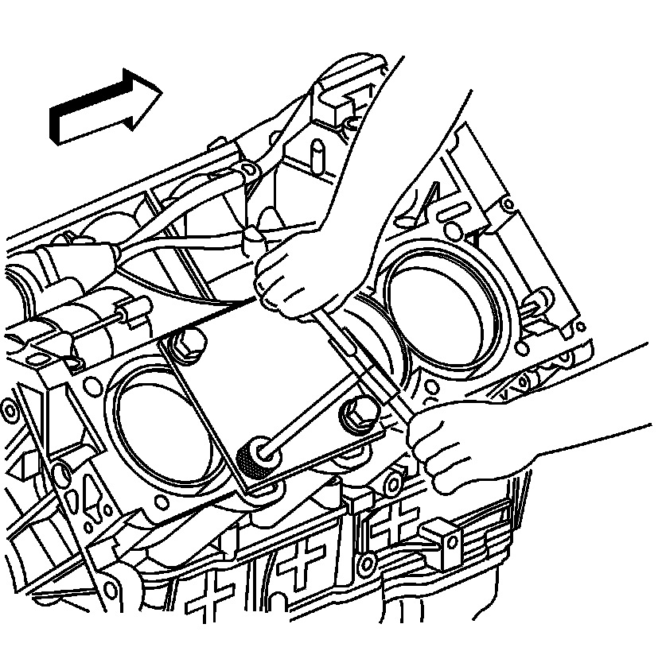
Important:
* During the tapping process, it is necessary to repeatedly remove the tap and clean chips from the hole and the flutes of the tap.
* Ensure the tap has created full threads at least to the depth equal to the insert length.
8. Using a suitable tapping wrench, tap the threads of the drilled hole by hand only.
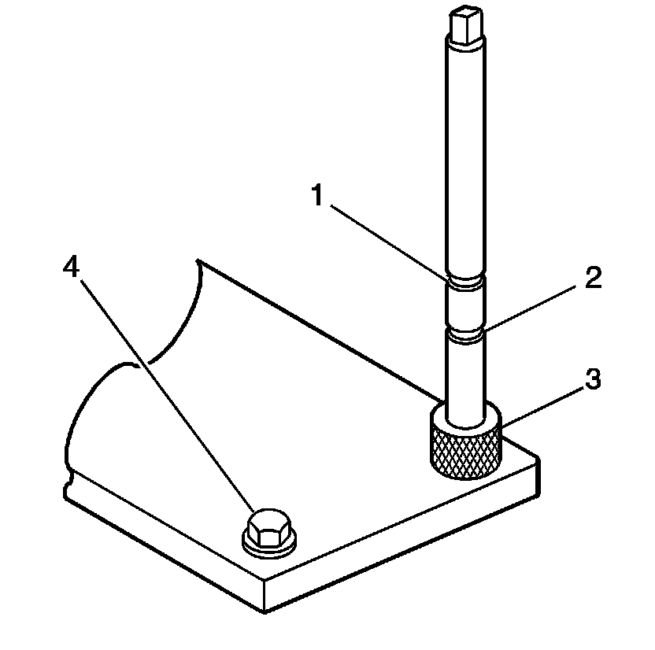
9. In order to tap the new threads for the insert to the proper depth, rotate the tap into the cylinder head bolt hole until the second mark (1) on the tap aligns with the top of the drill bushing (3).
Important: Remove the fixture plate prior to installing the insert with the installer tool.
10. Remove the fixture plate bolts (1).
11. Remove the fixture plate (3) and bushing.
Important: All chips must be removed from the tapped hole prior to insert installation.
12. Using compressed air, clean out any chips.
13. Spray cleaner GM P/N 12346139, GM P/N 12377981 (Canadian P/N 10953463) or equivalent into the tapped hole.
Important: All chips must be removed from the tapped hole prior to insert installation.
14. Using compressed air, clean out any chips.
Important: Do not allow oil or other foreign material to contact the OD of the insert.
15. Lubricate the threads of the driver installation tool (2) with the driver oil J 42385-110 (1).
16. Install the insert (2) onto the driver installation tool (1).
17. Apply threadlock sealant GM P/N 12345493, (Canadian P/N 10953488), J 42385-109, LOCTITE 277(R) or equivalent (1) to the insert OD threads (2).
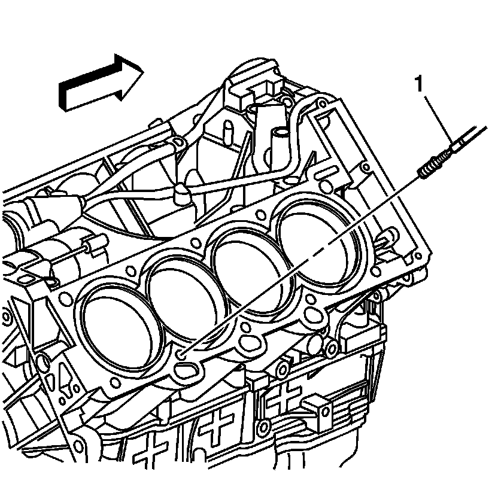
18. Install the insert and installation driver (1) into the tapped hole by hand only.
19. Start the insert into the threaded hole.
Important: If the insert will not thread down until the flange contacts the counterbored surface remove the insert immediately with a screw extracting tool and inspect the tapped hole for any remaining chips and/or improper tapping.
20. Install the insert until the flange of the insert contacts the counterbored surface.
Important: The driver installation tool will tighten up before screwing completely through the insert. This is acceptable. The threads at the bottom of the insert are being formed and the insert is mechanically locking the insert into the base material threads.
21. Continue to rotate the driver installation tool through the insert.
22. Inspect the insert for proper installation into the tapped hole.
Crankshaft Main Bolt Hole Thread Repair
Tools Required
J 42385-2000 Thread Insert Kit
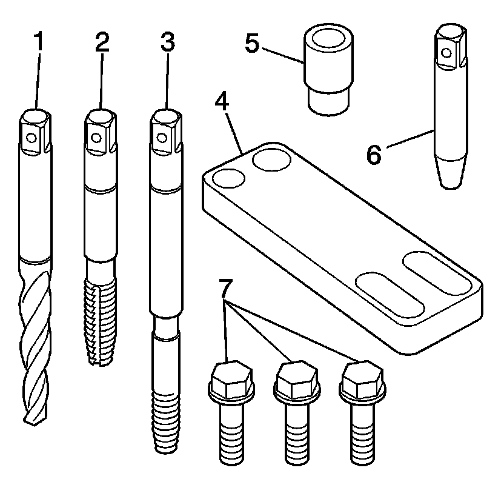
Important:
* In order to repair some crankshaft main bolt holes it will be necessary to mount the fixture plate upside down.
* Do NOT remove the fixture plate prior to installing the insert with the installation driver. The fixture plate remains in position throughout the thread repair process.
The crankshaft main bearing bolt hole thread repair kit J 42385-2000 components consist of the following:
* Drill (1) J 42385-511
* Tap (2) J 42385-512
* Installation driver (3) J 42385-513
* Fixture plate (4) J 42385-306
* Bushing (5) J 42385-307
* Alignment pin (6) J 42385-308
* Bolts (7) J 42385-510
Caution: Refer to Safety Glasses Caution (Safety Glasses Warning) .
Important:
* Ensure the fixture plate is installed during the machining and installation processes of the insert.
* The use of a cutting type fluid GM P/N 1052864, (Canadian P/N 992881), WD 40(R) or equivalent is recommended when performing the drilling, counterboring and tapping procedures.
When installed to the proper depth, the flange of the insert will be seated against the counterbore of the drilled/tapped hole.
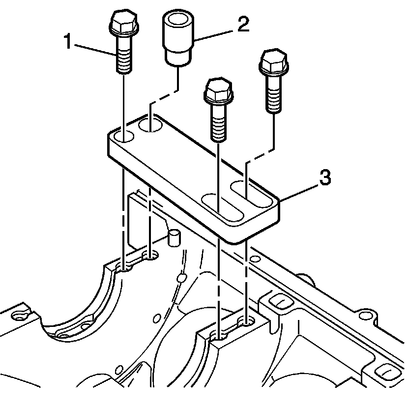
1. Position the fixture plate (3) with the bushing (2), installed over the crankshaft main cap bolt hole to be repaired.
2. Loosely install the fixture plate bolts (1) into the remaining crankshaft main cap bolt holes.
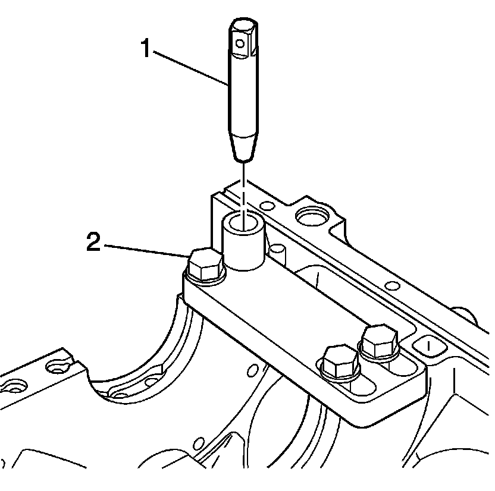
3. Position the alignment pin (1) through the bushing and into the crankshaft main cap bolt hole.
4. With the alignment pin in the desired crankshaft main cap bolt hole, tighten the fixture retaining bolts (2).
5. Remove the alignment pin (1) from the crankshaft main cap bolt hole.
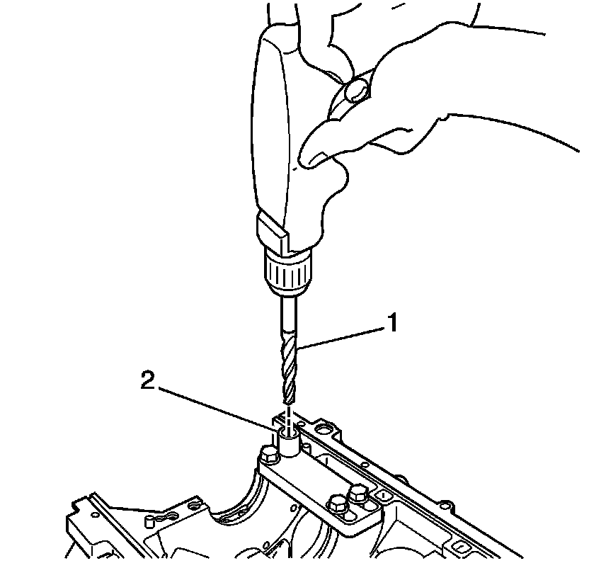
Important:
* During the drilling process, it is necessary to repeatedly remove the drill and clean chips from the hole and the flutes of the drill.
* Drill the crankshaft main bolt hole until the mark (1) on the drill aligns with the top of the drill bushing (2).
6. Drill out the threads of the damaged hole.
Important: All chips must be removed from the drilled hole prior to tapping.
7. Using compressed air, clean out any chips.
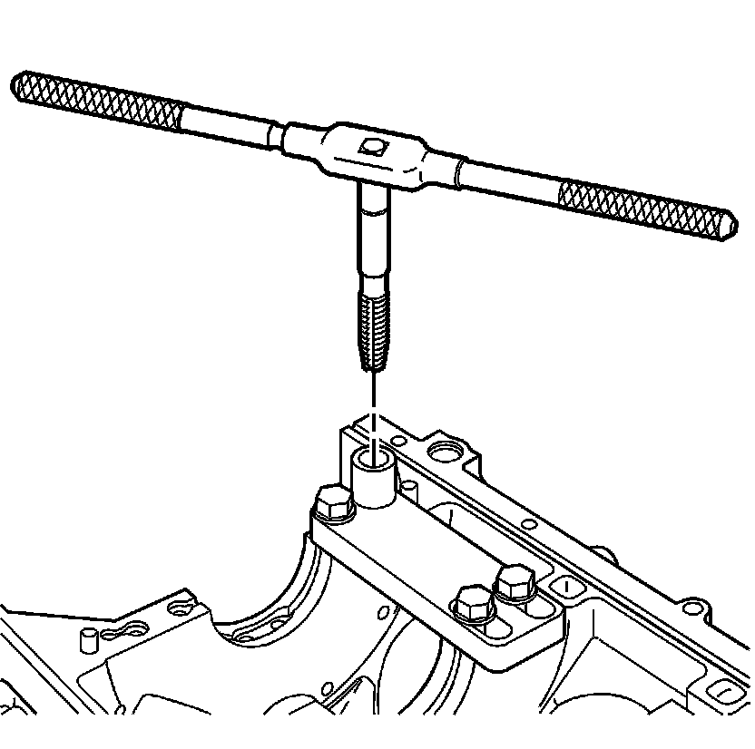
Important:
* Do not remove the fixture plate, ensure the fixture plate is installed during the machining and installation processes of the insert.
* During the tapping process, it is necessary to repeatedly remove the tap and clean chips from the hole and the flutes of the tap.
* Ensure the tap has created full threads at least to the depth equal to the insert length.
8. Using a suitable tapping wrench, tap the threads of the drilled hole by hand only.
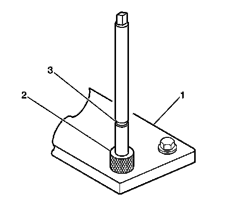
9. In order to tap the new threads for the insert to the proper depth, rotate the tap into the crankshaft main cap bolt hole until the mark (3) on the tap aligns with the top of the drill bushing (2).
Important: All chips must be removed from the tapped hole prior to insert installation.
10. Using compressed air, clean out any chips.
11. Spray cleaner GM P/N 12346139, GM P/N 12377981 (Canadian P/N 10953463) or equivalent into the tapped hole.
Important: All chips must be removed from the tapped hole prior to insert installation.
12. Using compressed air, clean out any chips.
Important:
* Do not remove the fixture plate, ensure the fixture plate is installed during the installation process of the insert.
* Do not allow oil or other foreign material to contact the OD of the insert.
13. Lubricate the threads of the driver installation tool (2) with the driver oil J 42385-110 (1).
14. Install the insert (2) onto the driver installation tool (1).
15. Apply threadlock sealant GM P/N 12345493, (Canadian P/N 10953488), J 42385-109, LOCTITE 277(R) or equivalent (1) to the insert OD threads (2).
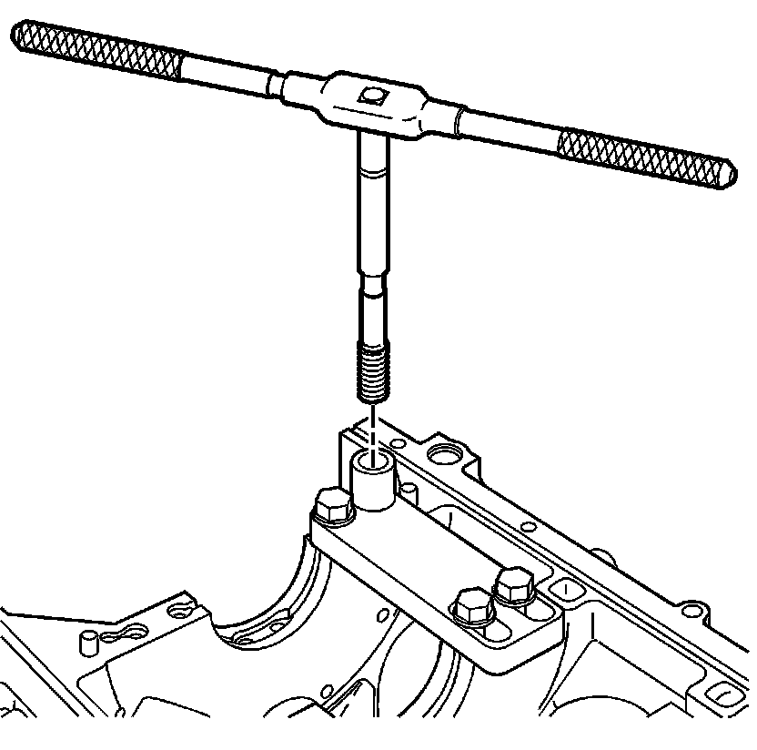
16. Install the insert and installation driver into the tapped hole by hand only.
17. Start the insert into the threaded hole.
Important: If the insert will not thread down until the flange contacts the counterbored surface remove the insert immediately with a screw extracting tool and inspect the tapped hole for any remaining chips and/or improper tapping.
18. Install the insert until the flange of the insert contacts the counterbored surface.
Important: The driver installation tool will tighten up before screwing completely through the insert. This is acceptable. The threads at the bottom of the insert are being formed and the insert is mechanically locking the insert into the base material threads.
19. Continue to rotate the driver installation tool through the insert.
20. Rotate the driver installation tool until the mark (3) on the driver installation tool aligns with the top of the drill bushing (2).
21. Inspect the insert for proper installation into the tapped hole.
22. Remove the fixture plate bolts (1).
23. Remove the fixture plate (3) and bushing (2).